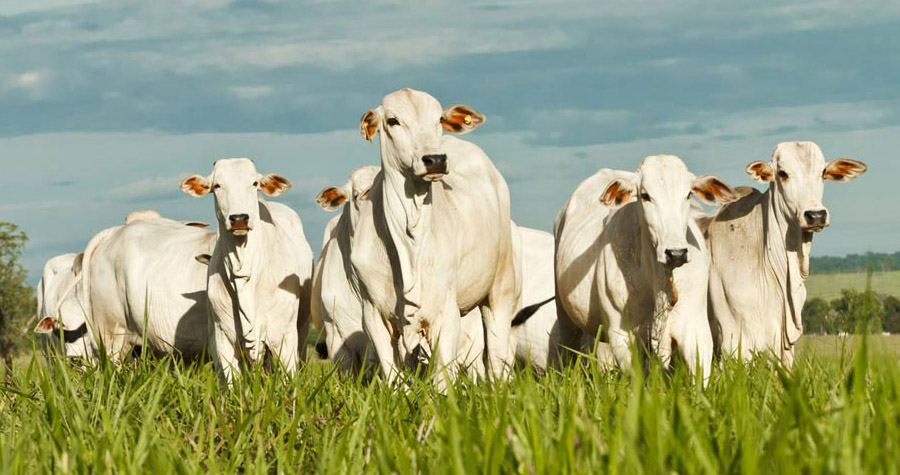

Sobre o Oeste do Paraná
O Oeste do Paraná é conhecido por sua agricultura diversificada e produção de grãos. Descubra mais sobre as principais cidades e suas produções:
Cascavel
Produção: Soja, milho e trigo.
Foz do Iguaçu

Produção: Turismo e agricultura.
Medianeira
Produção: Grãos e pecuária.
